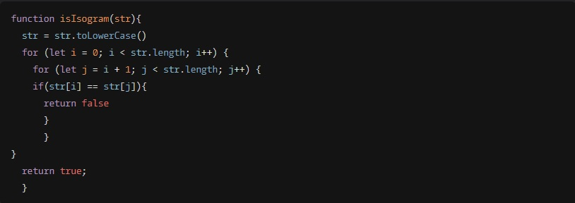

Tatiana Khmelevskaya
Frontend Developer
- Location: Saint-Petersburg, Russia
- Email: Khmelevskayatati@gmail.com
- Phone number: +79818102438
Career objective and the candidate information:
Looking to obtain a position in the IT industry where my international educational and working experience will allow to make an immediate contribution to the company development.
My career journey started with English-Chinese-Russian written and oral translations. Working as an interpreter I had to provide high interpretation service in Russian, English and Chinese spoken by foreign students and Russian teachers. Beside that I have a wide-range experience of teaching foreign languages and I have already translated 3 books into Chinese and many articles related to different subjects. All this experience allowed me to develop the necessary
SOFT SKILLS that can also relate to Frontend development:
- great language and communication skills;
- ability to work in team and alone;
- collect and analyse information;
- diligently work on any task;
- ability to explain complicated things in a simple way;
- organize the workflow;
- prioritize tasks;
- in case of coming across any difficulties, I'm able to independently make research and find suitable solutions and only if it is impossible to solve the problem on my own, seek to colleagues for help etc.
Hard Skills
- HTML
- CSS/SASS
- JavaScript (Basic)
- Git
Code Example
Completed KATA from CODEWARS: Implement a function that determines whether a string that contains only letters is an isogram. Assume the empty string is an isogram. Ignore letter case.

Courses:
- HTML and CSS Tutorials on ru.code-basics.com;
- HTML and CSS Tutorials on FreeCodeCamp;
- JS Tutorial on ru.code-basics.com;
- The complete javascript course on udemy.com;
- RS Schools Course «JavaScript/Front-end» (in progress);
Languages:
- Russian - native;
- English - advanced;
- Chinese - HSK5.